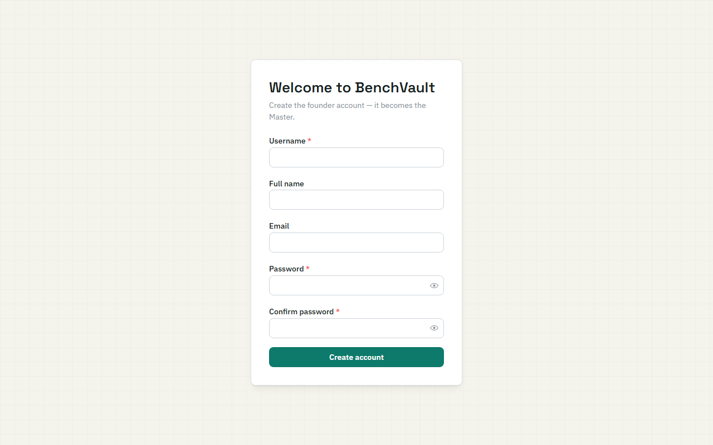

BenchVault v5.0.5
Install Guide
This guide takes you from nothing to a working BenchVault your whole lab can use. It assumes you have never used Docker. Budget about 10 minutes.
If BenchVault is already running and you just want to use it, you want the User Guide instead.
1. What you need first
A computer that stays switched on. Whatever you install BenchVault on becomes the lab's server. When it sleeps or shuts down, BenchVault goes with it. An old desktop in the corner is fine; a laptop that goes home each night is not.
Docker. Download it from docker.com:
- Windows / macOS — install Docker Desktop and start it. You'll see a whale icon in your system tray or menu bar when it's running.
- Linux — install Docker Engine and the Compose plugin from your distribution's packages.
What is Docker? It runs pre-packaged bundles called containers. Each one carries an application and everything it needs to run, already configured. It means you never install or set up a database, Python, or Node — BenchVault brings its own, and they can't collide with anything else on the machine.
BenchVault itself. Download this repository as a ZIP and unpack it, or if
you have git:
git clone https://github.com/ivanmaric465-alt/benchvault.git
cd benchvault
2. Set your password
BenchVault keeps its data in a database that needs a password. Copy the example settings file and set one:
cp .env.example .env
Open .env in any text editor and change this line:
POSTGRES_PASSWORD=change-me
Pick anything you like. You will not need to type this again — nobody logs
into BenchVault with it; it's only how BenchVault's own pieces talk to each
other. Just don't leave it as change-me, and don't share the file.
Everything in
.envis read directly by BenchVault's containers. If your computer happens to havePOSTGRES_PASSWORDorPOSTGRES_DBset for other software, it is ignored — what's in this file wins.
3. Decide who can reach it
This is the one decision that trips people up, so it's worth 30 seconds now.
Two settings in .env must agree with each other, or people will click
"Sign in" and nothing will happen, with no error message explaining why.
Option A — just this computer (trying it out)
DOMAIN=
BENCHVAULT_COOKIE_SECURE=false
Reach it at http://localhost.
Option B — everyone on the lab network (most labs want this)
DOMAIN=
BENCHVAULT_COOKIE_SECURE=false
Same settings as Option A. Others reach it at http://<this-computer's-ip> —
for example http://192.168.1.50. Find that address with ipconfig on
Windows or ip addr on Linux/macOS.
Option C — over the internet, with your own domain
DOMAIN=benchvault.your-university.edu
BENCHVAULT_COOKIE_SECURE=true
Point that domain's DNS at this computer first. BenchVault obtains and renews an HTTPS certificate automatically.
The trap:
BENCHVAULT_COOKIE_SECURE=truetells browsers to send the login cookie only over HTTPS. Combine it with a plainhttp://address and the browser silently discards the cookie — login appears to do nothing at all. Keep both settings on the same side: plain HTTP andfalse, or a real domain andtrue.
4. Start it
docker compose up -d
The first run downloads BenchVault's containers, which takes a few minutes. Afterwards it starts in seconds. You'll see something like:
Container benchvault-db-1 Creating
Container benchvault-db-1 Created
Container benchvault-api-1 Creating
Container benchvault-api-1 Created
Container benchvault-caddy-1 Creating
Container benchvault-caddy-1 Created
Container benchvault-db-1 Starting
Container benchvault-db-1 Started
Container benchvault-db-1 Waiting
Container benchvault-db-1 Healthy
Container benchvault-api-1 Starting
Container benchvault-api-1 Started
Container benchvault-caddy-1 Starting
Container benchvault-caddy-1 Started
The benchvault- prefix comes from the name of the folder you're in, so yours
may differ.
Check all three are running:
docker compose ps
NAME IMAGE SERVICE STATUS
benchvault-api-1 benchvault-api:latest api Up (healthy)
benchvault-caddy-1 benchvault-web:latest caddy Up
benchvault-db-1 postgres:16 db Up (healthy)
(Abbreviated — the real output also lists the command, creation time, and ports.)
Both db and api should say healthy. If they don't, jump to
section 8.
5. Claim the first account — do this now
Open BenchVault in a browser (http://localhost, or your address from step 3).
Because nobody has an account yet, it opens straight to a setup screen. Fill it in. That first account becomes the lab's Master — the administrator who can manage everyone else.

Do this before you share the address. Until someone claims that first account, the setup screen is open to anyone who can reach BenchVault, and whoever gets there first becomes the administrator. Claim it immediately — before you send the link around, and before you point a domain at the machine.
Once claimed, the setup screen is gone for good and everyone else sees a normal sign-in page.
6. Add your team
Go to Account → Users and create an account for each person.
- Regular — works with their own experiments, samples, and bookings. This is the right choice for nearly everyone.
- Master — full access to every record plus the admin screens. Give this to the one or two people who actually run the system.
Send each person their username, the password you set, and the address. They can change their own password under Account.
7. Check it works
- Sign in as yourself.
- Go to Experiments and click New Experiment.
- Give it a title and save it.
- Confirm it appears in the list, then delete it.
If that worked, BenchVault is properly installed. The User Guide covers everything your lab can do from here, and the Administrator Guide covers what Master users manage.
8. When something goes wrong
| What you see | Why | What to do |
|---|---|---|
port is already allocated |
Something else on the machine already uses port 80 | Set HTTP_PORT=8080 in .env, run docker compose up -d again, then use http://localhost:8080 |
| Sign in does nothing — no error, page just sits there | BENCHVAULT_COOKIE_SECURE=true while you're on a plain http:// address |
Set it to false in .env, then docker compose up -d. See section 3 |
| Works on the server, unreachable from other computers | The machine's firewall is blocking the port | Allow the port through the firewall. Confirm you're using the server's network address, not localhost |
| The setup screen appears again after a restart | The database volume was deleted | Restore from a backup — see the Deployment Guide |
| Nobody can sign in and you've lost the Master password | — | docker compose exec api python scripts/reset_master_password.py — it asks which account to reset and lets you set or generate a new password |
db or api never reaches healthy |
Usually a bad value in .env |
docker compose logs api and docker compose logs db — the reason is normally in the last few lines |
Useful commands
docker compose logs api # what the application is saying
docker compose ps # what's running
docker compose restart # restart everything
docker compose down # stop (your data is kept)
docker compose up -d # start again
docker compose downis safe — it stops the containers but keeps your data. Adding-vto that command deletes your database permanently. Don't, unless you intend to erase everything.
Keeping it running
Once BenchVault matters to your lab, read the Deployment Guide. It covers backups and how to practise restoring them, upgrading to new versions, and moving to a proper domain with HTTPS.
Set up backups before you need them.
A note on platforms
These instructions were tested on Windows. The macOS and Linux steps are the same commands, written from Docker's official documentation, but have not been verified on those systems — the Docker installation step is where they differ most.